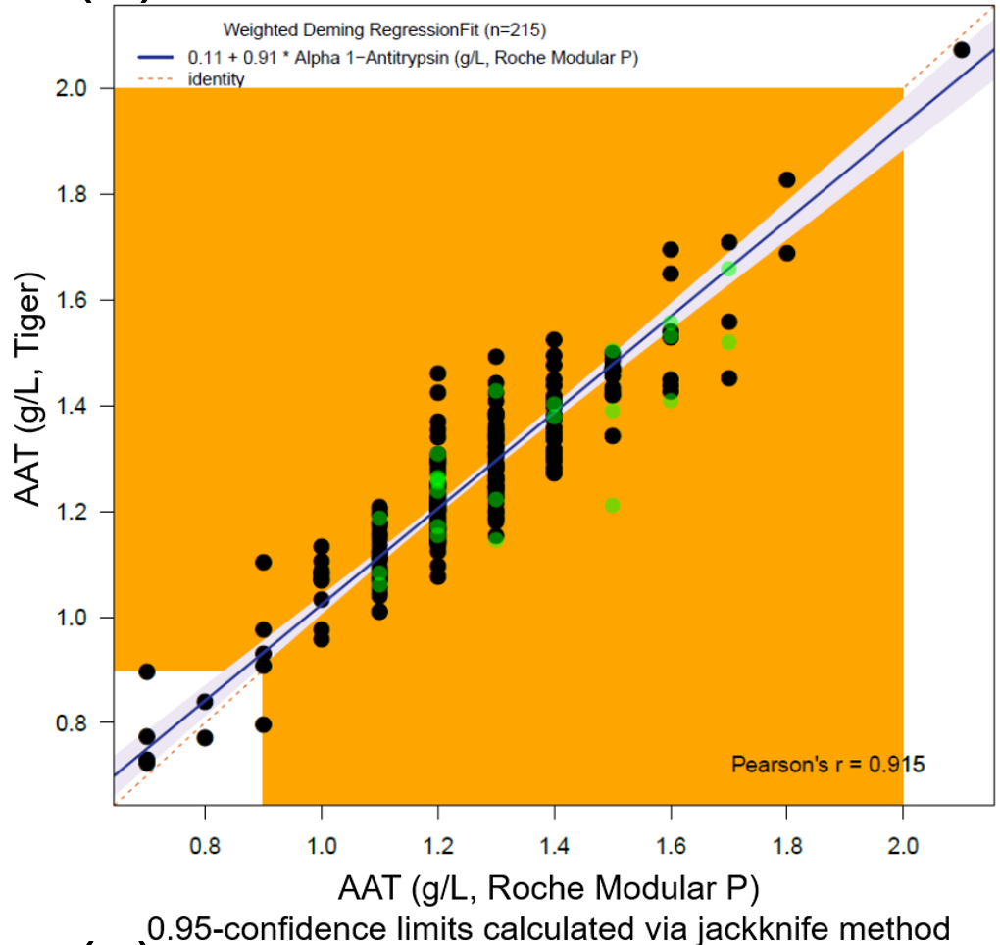
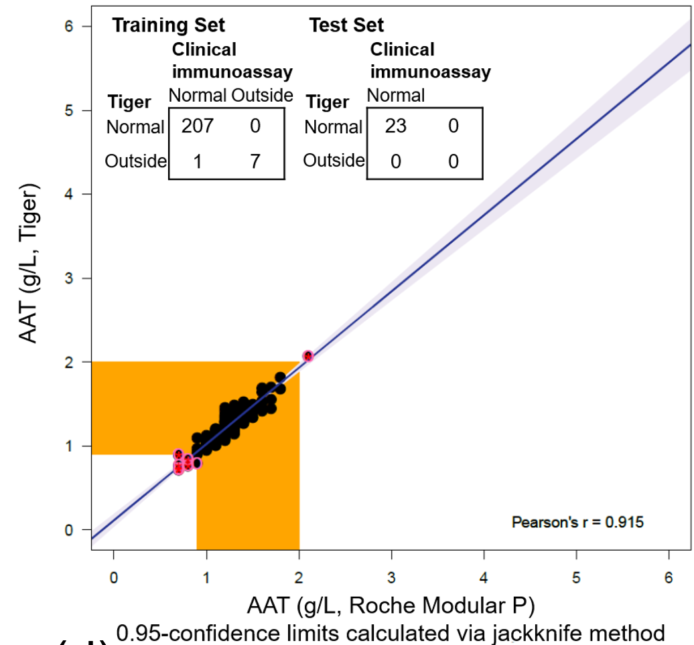

Machine Learning
Want great explanations? Then consume lots of the content Cassie creates https://kozyrkov.medium.com/
The overall goal of machine learning is to teach computers to do useful things from examples without the need to break down tasks into algorithmic solutions. Sounds simple but you can often get near comical results (see puppy versus muffin for a reasonable ML solution that can perform spectacularly well ‘in the lab’ and has some potential issues in the real world) where systems don’t actually learn what you intended them too.
Books that I found illuminating (and I often return to)
The Elements of Statistical Learning
A version is available free online.
Great detailed background. I particularly like the way it builds from simple models and shows the connections between many approaches. It challenges the ‘this algorithm is best’ approach with highlighting differences and cases where you may want to explore different approaches.
Pyle, D. (1999). Data preparation for data mining. United Kingdom: Elsevier Science
Once you get past the first hurdle of using various ML algorithms on the example data and move on to trying it on real world problems you soon find that any form of success can depend on the properties, volume and quality of the data. Many properties are obvious such as the data types and number of samples but others can be more subtle. For example different equipment may produce the same ‘measure’ but the values may be rounded or even different. In their paper, Kuriyama et al. compare several assays for Prostate Specific Antigen and a quick glance over Figure 2 shows you don’t get exactly the same answers. This may not matter in a large enough data set if the assays are randomly used across groups but there are pragmatic cases where control samples may be collected in different facilities to cases. The data column might just be labeled ‘Total PSA’. These details can matter a great deal when it comes to finding new health insights and designing studies.
Assumptions can hit you when you don’t realise. As part of one of clinical studies we commissioned standard blood tests. The tests are used in clinical practice in a professional lab and are well controlled. We expected our research broad assays to be less “accurate” but what we didn’t realise is that the clinical lab measures may be rounded. So much so that it is clear in many of our plots and has an effect on the fit performance.
The observed vertical groups in the above figure come from rounding in the clinical lab. The lab tests were capable of higher resolution but as part of the regulatory oversight procedures the lab limited the reported values.
The rounding makes more sense in the context of the clinic. The figure below is a zoomed out version (scaled to three times the measure range normally observed) of the previous figure  the orange shaded area denotes the clinically normal range. Generally the clinical result used is ‘normal’ or not and the actual absolute value is not of such a great importance.
This highlights a second key consideration; What am I actually trying to do? Do I need to predict the absolute value or will a qualitative answer work? The figure above shows an example of this where the Pearson correlation between measures is shown but we also show the ‘confusion matrix’ for calling the samples as normal or not using the different measures. This is important to consider not just in the target for machine learning but also in that certain input variables might have similar data limitations imposed.
The next biggest consideration is independence of variables or how much they are correlated. Today it is common to capture everything and build large data lakes but many biological measures are not independent; a simple example is BMI which uses height and weight. You might get a data set that reports height, weight and BMI. Obviously BMI is not indepent of the other two and generally your weight will be correlated to your height too. In biological systems it can be very difficult (and sometimes impossible) to measure the underlying (latent) variable you are really targeting and it is common to have multiple correlated that provide a glimpse of the information that is required. This correlation can lead to misleading results and can make important variables seem to be inconsistent (the ‘best’ variable amongst a group of correlates may change depending on the data set used). In proteomics studies this is compounded by the fact we don’t actually know the function of a lot of the measures.
Machine Learning and ’omics data
Much of my focus on machine learning has been tied to extracting meaning from “ill balanced” sets. Ill balanced for my purposes is lots of measures in few samples. There are generally two goals; the first is to tell some predefined groups apart given the data (e.g. cancer or not) and the second is to work out what combination of variables allows you to do it which can drive further exploration of potential mechanisms.
In my experience generating high performance models on the data has not been an issue and there has been little to choose between algorithms. The main issue is it is difficult to derive models that generalise and are not highly tied to a given data set. There is always the problem of volume and quality of data as the data splits necessary to train test and validate models reduces your ability to find them in the first place.
Some rules of thumb suggest you need 20 samples per group per variable you measure so even in a modest ’omics experiment with 1000 variables that is a very large number of samples. What I tend to explore is how to build reliable models and determine important factors with a lot less samples per variable.